Development of LexWiki
The LexWiki Engine, the custom-built core of the LexWiki encyclopedia, has undergone a rapid development process, evolving from an initial concept in early April 2025 to its current Beta 3 status.
Behind-the-scenes
Early April 2025: Planning Stages
In early April 2025, Lexibyte began thinking about making a Lexibyte-themed Wikipedia. The goal was to create a resource to easily get information about their projects and related content. They considered a self-hosted MediaWiki server, but Lexibyte was unsure how to make it work. This thought process continued through the entire month of April.
Early May 2025: Development Start
Between May 1 and May 3, a Miraheze-hosted wiki was in the plans. However, after it wasn’t parsed correctly due to the bot not cooperating, the LexWiki Engine started development.
Development began with forking HoriWebsite version 2.4.3565, as creating new pages with Jekyll within the existing framework would cause issues.
Here are the earliest available screenshots of that fork:
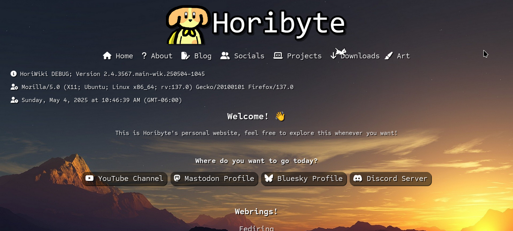
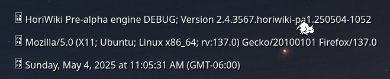
Milestone 1, 2 and 3 (Pre-Alpha) and Alpha
Real development quickly took place after forking the website; what is now known as the LexWiki Engine was developed in just two days.
This section provides screenshots from developer builds of LexWiki, though image quality may vary as they were taken from Discord messages sent by Lexibyte or others.
Builds Compiled on May 4, 2025:
Pre-alpha 0.1
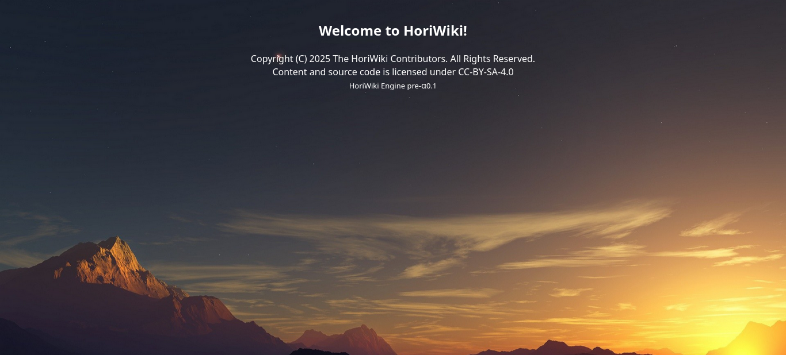
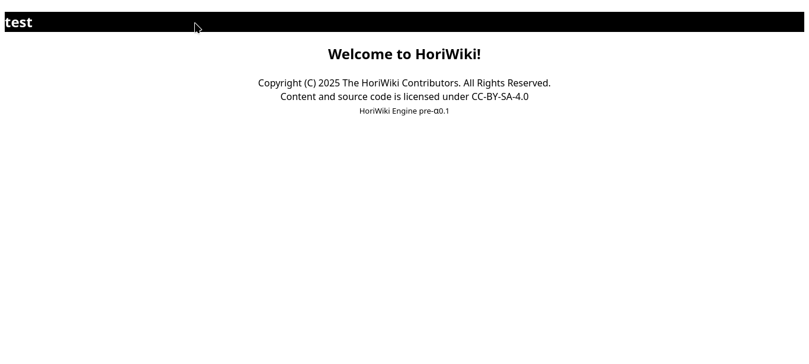
This build essentially removed most of the HoriWebsite’s front-end elements, though some underlying HoriWebsite code still remained.
Pre-alpha 0.2
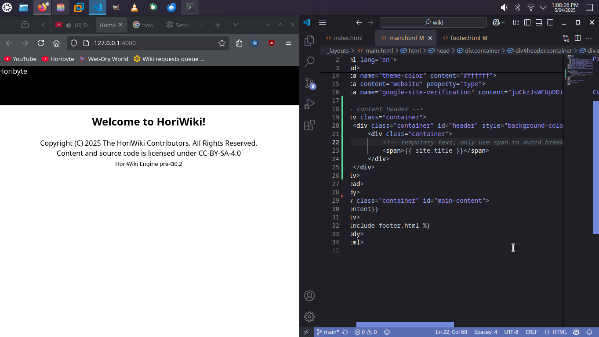
This version shows early attempts to implement MediaWiki-style navigation bars.
Pre-alpha 0.3
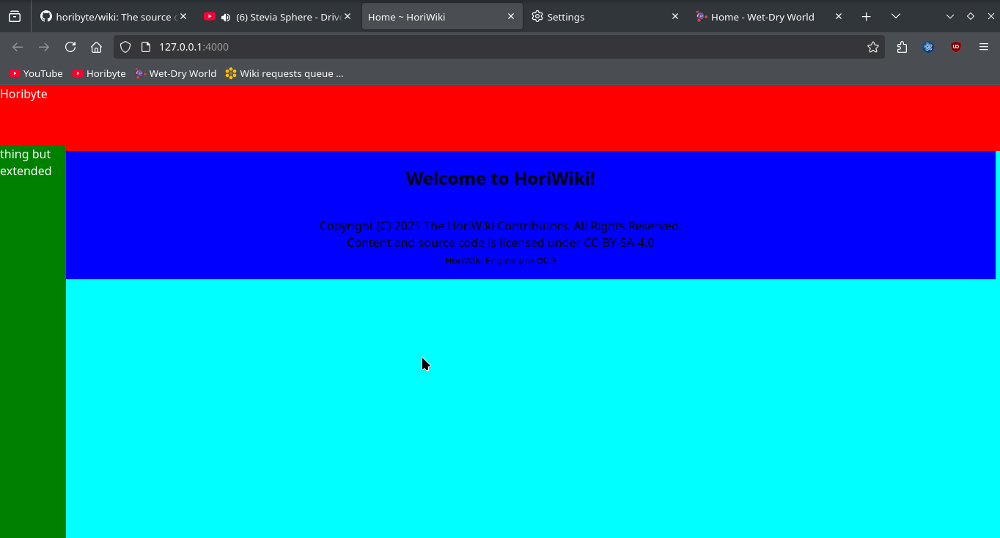
Navigation bars were partially implemented in this build, using multi-colored segments to aid in debugging.
Pre-alpha 0.4
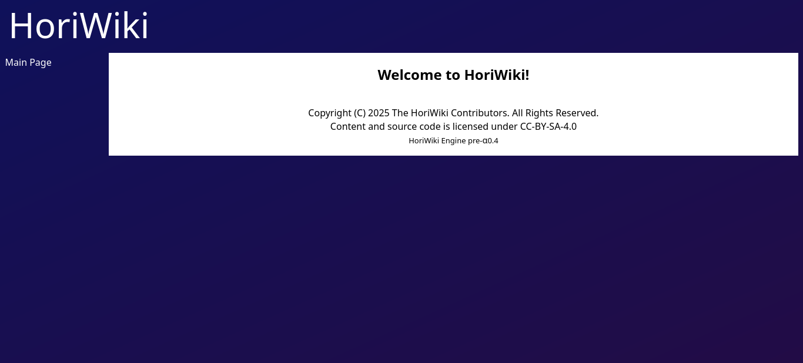
Pre-alpha 0.4 is where LexWiki began to take on its distinct form, with several key elements nearing completion.
Pre-alpha 0.5.x
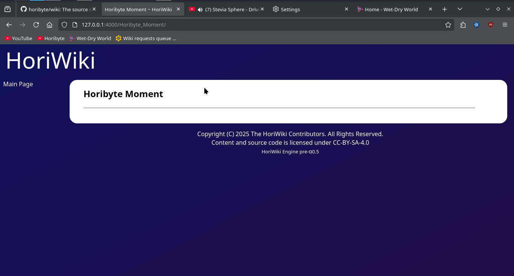
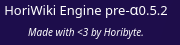
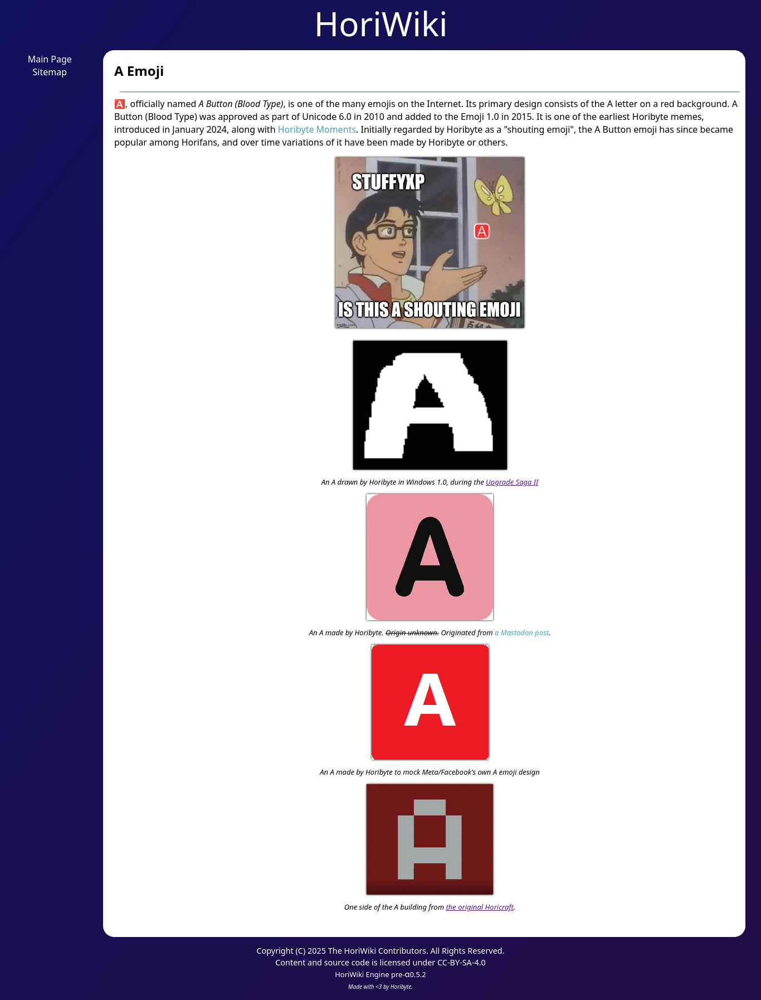
Builds 0.5.x were the most complete builds of that day, with nearly all essential components implemented correctly.
Builds Compiled on May 5, 2025:
Pre-alpha 0.5.3
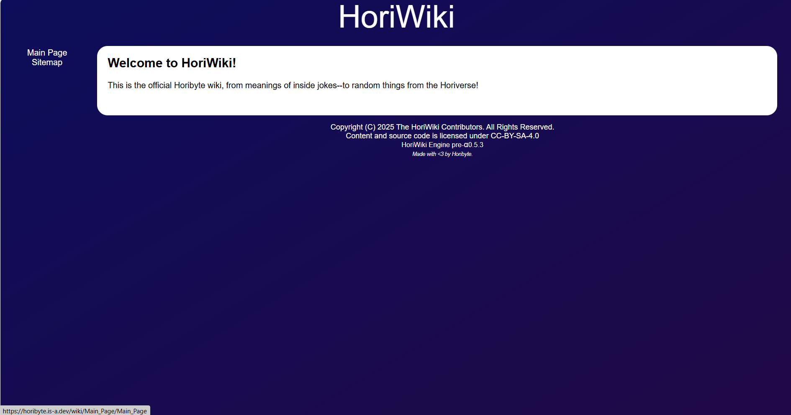
Build 0.5.3 was the most feature-complete pre-alpha build, with most important elements already in place.
Builds Compiled on May 6-7, 2025:
Alpha 1.1
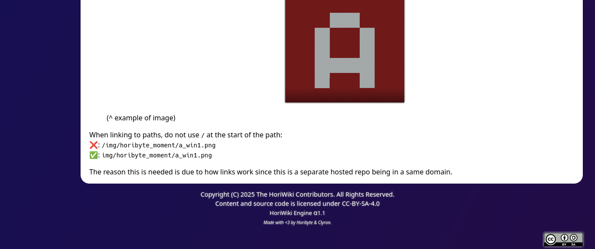
Alpha 1.1 was a major milestone, introducing significant updates to the engine, including Markdown support. Most fixes were contributed by Clyron.
Alpha 1.2
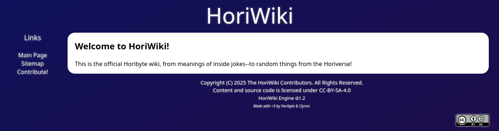
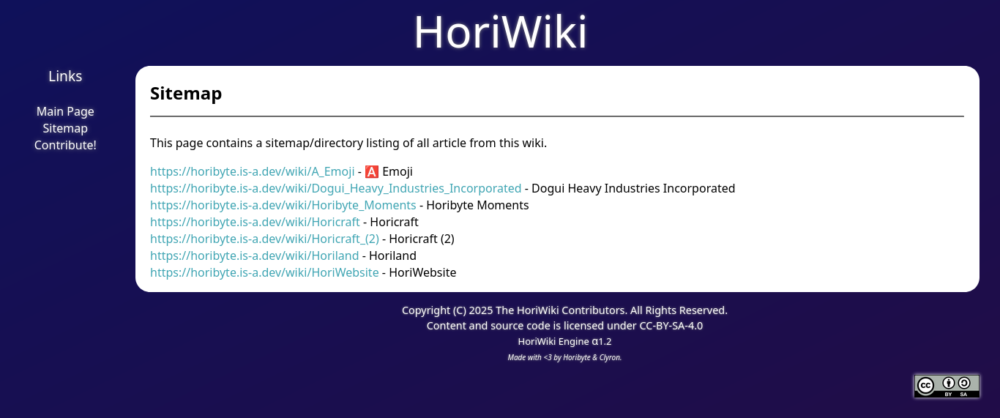
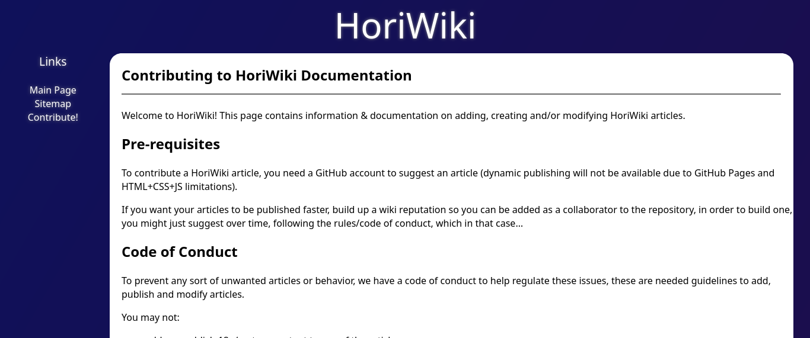
As of May 7, 2025, Alpha 1.2 was the current version. This update focused primarily on bug fixes rather than new features, but was still a notable refinement of the engine.
Beta
Development after the initial Alpha phases rapidly progressed into Beta stages, introducing significant new functionalities and refinements.
Beta 1.0
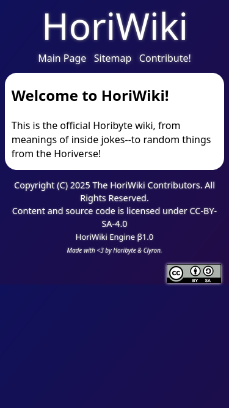
Released on May 7, 2025, Beta 1.0 included crucial fixes for mobile compatibility.
Beta 2.0
Beta 2.0 marked a major step by introducing the Material Design Lite (MDL) layout, significantly enhancing the wiki’s visual appearance and user interface.
Beta 2.1
Building on Beta 2.0, this version introduced core user-facing features, including functional search capabilities and the Wikipedia-styled “Did You Know” section.
Beta 3.0
LexWiki has recently reached Beta 3 status in its development version. This phase primarily focuses on enhancing various aspects of the wiki:
- MDL Component Enhancements: Material Design Lite components have received significant updates, now featuring blurred transparency, giving them a Mica-like appearance.
- Article Wording Improvements: Efforts have been made to enhance the wording of various articles for better clarity and consistency.
- Horibyte to Lexibyte Transition: This build includes updates related to the ongoing brand transition from Horibyte to Lexibyte within the wiki’s content and styling.
The LexWiki continues its development period, as there are more things to add to make it a fully complete MediaWiki-like port to Jekyll. The wiki is still in development.